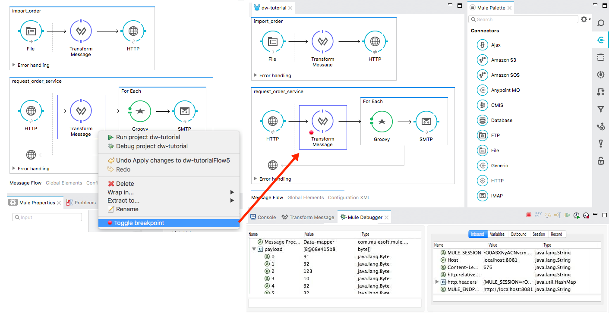
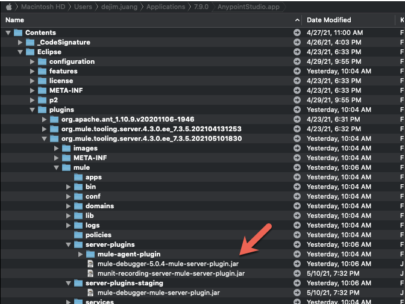
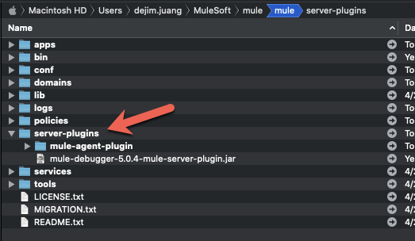
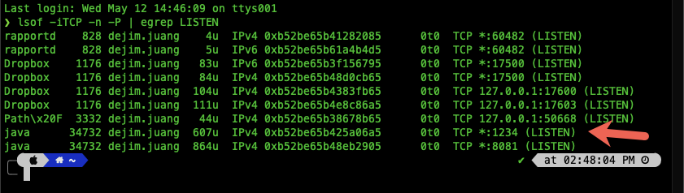
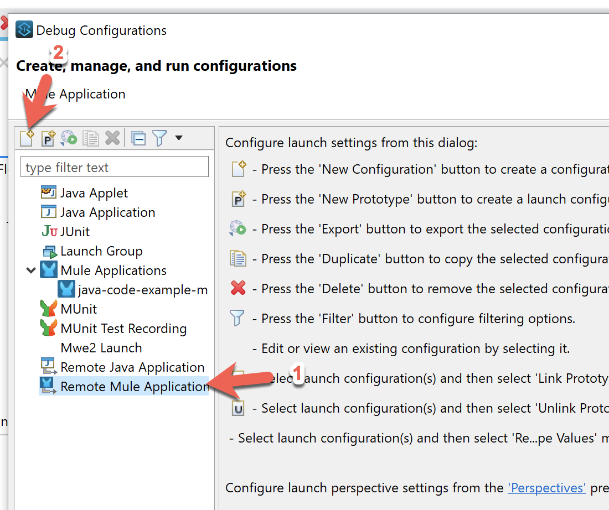
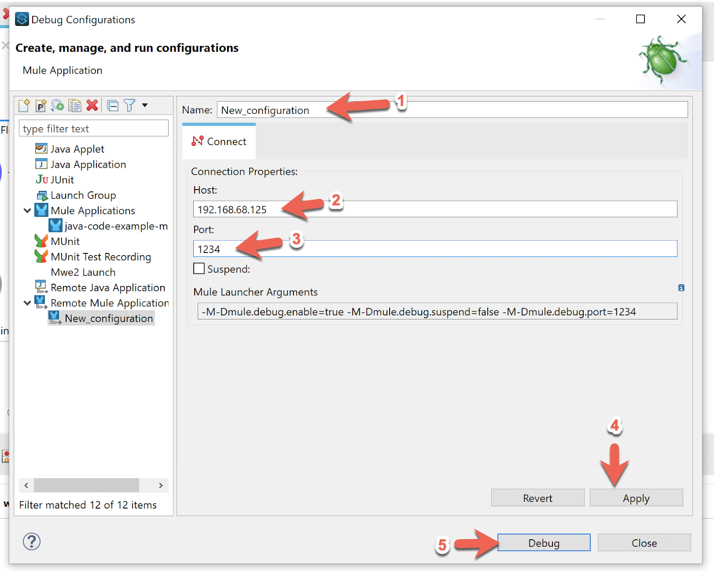
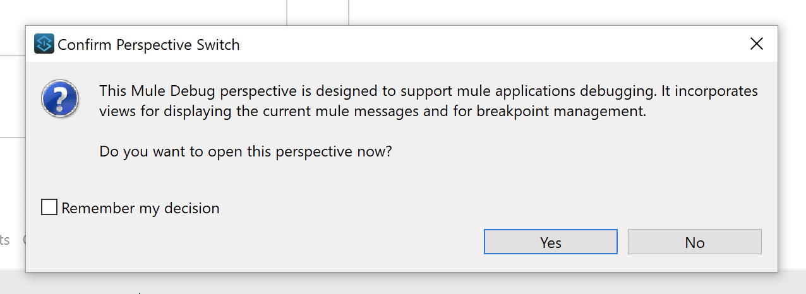
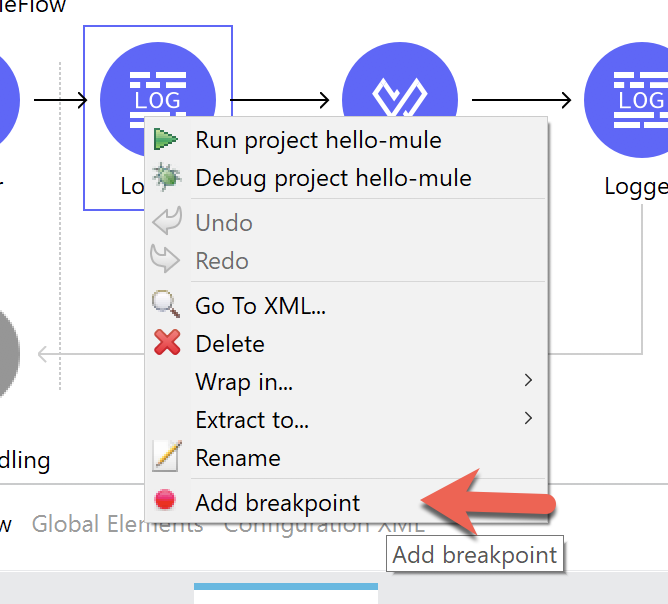
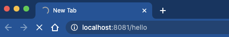
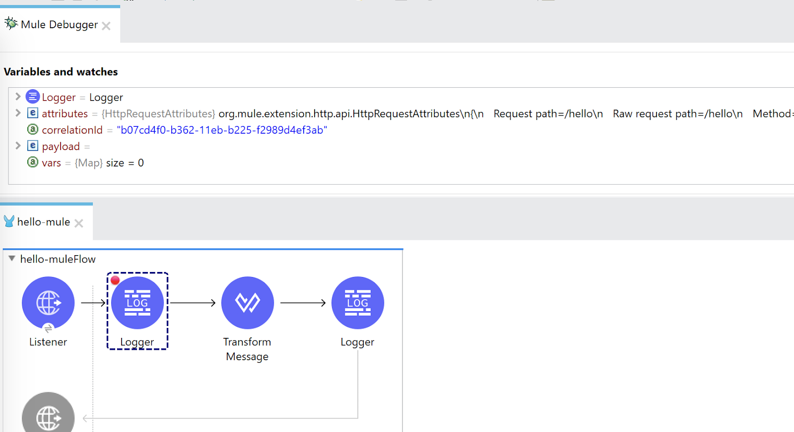

Last Updated: 2021-05-12

The Visual Debugger in Anypoint Studio is a unique capability of the Anypoint Platform that differentiates us from other integration solutions. It allows developers to quickly debug their Mule applications by stopping execution to check the contents of a message at previously-specified building blocks through the use of breakpoints. If you're a Java or .NET developer, this is similar to the line-by-line debugging offered in Eclipse/IntelliJ or Visual Studio but from a component-to-component perspective in a Mule application in Anypoint Studio.
In addition to debugging applications that are deployed to the embedded Mule Runtime in Studio, developers can also debug applications that are deployed to remote standalone Mule Runtime environments. In this codelab, you'll learn how to set up Mule and Anypoint Studio for remote debugging.
Before you connect to a standalone Mule Runtime for remote debugging, you need to add a plugin that allows Studio to connect to the runtime. Make sure you stop the Mule Runtime and close and quit Anypoint Studio before you begin these steps.
The plugin you need to add to the Mule Runtime is found with Anypoint Studio and it requires a little digging to get to the file. Again, be sure to close and quit Studio before grabbing the file otherwise it will be expanded in the server-plugins folder
If you are on macOS, navigate to the following directory:
<AnypointStudio_App_Location>/Contents/Eclipse/plugins/org.mule.tooling.server.4.3.0.<Latest_Version>/mule/server-plugins/mule-debugger-5.0.x-mule-server-plugin.jarYou may have installed multiple Mule Runtimes in Studio so choose the latest org.mule.tooling.server directory and grab the latest *.jar version.

Switch to your Mule Runtime installation folder and paste the file into the following directory:
<Mule_Runtime_Location>/server-plugins
Now open a Terminal or PowerShell window and navigate to the Mule Runtime folder to start the runtime. We're going to start the Mule Runtime in debug mode.
Run the following command:
./mule -M-Dmule.debug.enable=true -M-Dmule.debug.port=1234Parameter | Description |
| Mandatory. Sets debugging mode in Mule. Issue this parameter first. |
| Optional. Sets the listening port for incoming connections from Studio. If unset, the listening port will be 6666. |
| Optional. Sets "suspend" mode in Mule. In suspend mode, Mule will start, then immediately suspend application execution until it receives a connection on the debug port. |
Once Mule is started and running, you can run the following command to make sure debug mode is running:
lsof -iTCP -n -P | egrep LISTENIn the screenshot below, you'll see port that you set when you started Mule (e.g. 1234)

Now that the Mule Runtime is up and running, let's switch to Anypoint Studio to connect to the remote runtime and debug an application.
Before accessing and debugging your application on a remote server, you must first export and deploy your application to the desired Mule server and then proceed with this step.
Open up Studio and open the project that you have deployed to the remote Mule Runtime. Right click on the project in the Package Explorer and select Debug As > Debug Configurations
Select Remote Mule Application and click on New Configuration

Give the configuration a name and then set the host and port where the Mule Runtime is running. The port should match the port that you used in the previous step. Once you've made those changes, click on Apply and then Debug

If the Mule Runtime was configured correctly, you should see the Confirm Perspective Switch window. Go ahead and click on Yes to change to the Visual Debug perspective.

If you've used the Visual Debug before these next steps should be familiar. Right click on any component in your flow and click on Add Breakpoint

Switch to your web browser and navigate to the URL to kick off the flow. In the case of the application I used, I navigated to http://localhost:8081/hello on the same machine where the Mule Runtime was deployed to.

Back in Studio, Visual Debugger should have been kicked off. You can step through the flow like usual.

As you can see, Studio gives you the ability to visually debug your Mule application either locally or remote. There are some items to note though.
Visual Debugger is a powerful tool for debugging that helps Mule developers quickly test, troubleshoot, and debug issues with your application.